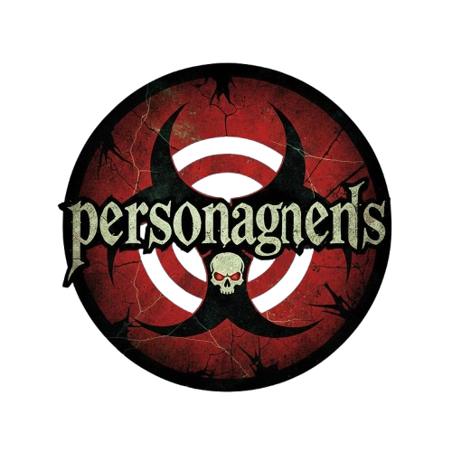
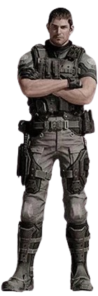

Ex-piloto da Força Aérea, ele evoluiu de um soldado de elite para um veterano endurecido e fundador da B.S.A.A., combatendo a Umbrella e monstros bio-orgânicos mundialmente.
História e Evolução: Origens: Nascido em 1973, serviu na Força Aérea dos EUA antes de ser recrutado por Barry Burton para a equipe Alfa da S.T.A.R.S. de Raccoon City. Incidente na Mansão (RE1): Sobreviveu ao incidente na Mansão Spencer
em 1998, descobrindo as armas biológicas da Umbrella ao lado de Jill Valentine. Guerra contra a Umbrella: Após a destruição de Raccoon City, perseguiu a Umbrella na Europa, eventualmente ajudando a fundar a BSAA (Bioterrorism Security Assessment
Alliance) para combater bioterroristas.